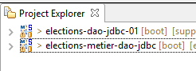

8. [TD]: الطبقة [metier]
الكلمات الرئيسية: بنية متعددة الطبقات، Spring، حقن التبعيات.
 |
8.1. Support
 |  |
يحتوي المجلد [support / chap-08] على مشروع Eclipse الخاص بهذا الفصل.
8.2. تكوين Maven
 |
سيعتمد المشروع [elections-metier-dao-jdbc] على المشروع [elections-dao-jdbc-01]. سنقوم بتثبيت ملف jar الخاص بهذا المشروع الأخير في مستودع Maven المحلي:
 |
وبعد ذلك، تكون تكوينات Maven لمشروع Eclipse [elections-metier-dao-jdbc] كما يلي:
 |
<project xmlns="http://maven.apache.org/POM/4.0.0" xmlns:xsi="http://www.w3.org/2001/XMLSchema-instance"
xsi:schemaLocation="http://maven.apache.org/POM/4.0.0 http://maven.apache.org/xsd/maven-4.0.0.xsd">
<modelVersion>4.0.0</modelVersion>
<groupId>istia.st.elections</groupId>
<artifactId>elections-metier-dao-jdbc</artifactId>
<version>0.0.1-SNAPSHOT</version>
<parent>
<groupId>org.springframework.boot</groupId>
<artifactId>spring-boot-starter-parent</artifactId>
<version>1.2.7.RELEASE</version>
</parent>
<properties>
<project.build.sourceEncoding>UTF-8</project.build.sourceEncoding>
<java.version>1.8</java.version>
</properties>
<dependencies>
<!-- DAO -->
<dependency>
<groupId>istia.st.elections</groupId>
<artifactId>elections-dao-jdbc-01</artifactId>
<version>0.0.1-SNAPSHOT</version>
</dependency>
<!-- Spring Boot -->
<dependency>
<groupId>org.springframework.boot</groupId>
<artifactId>spring-boot</artifactId>
<scope>test</scope>
</dependency>
<!-- اختبار Spring Boot -->
<dependency>
<groupId>org.springframework.boot</groupId>
<artifactId>spring-boot-starter-test</artifactId>
<scope>test</scope>
</dependency>
</dependencies>
<!-- المكونات الإضافية -->
<build>
<plugins>
<plugin>
<artifactId>maven-assembly-plugin</artifactId>
<configuration>
<archive>
<manifest>
<mainClass>config.AppConfig</mainClass>
</manifest>
</archive>
<descriptorRefs>
<descriptorRef>jar-with-dependencies</descriptorRef>
</descriptorRefs>
</configuration>
</plugin>
<!-- لتثبيت مكون المشروع في مستودع Maven المحلي -->
<plugin>
<groupId>org.apache.maven.plugins</groupId>
<artifactId>maven-surefire-plugin</artifactId>
<version>2.18.1</version>
</plugin>
</plugins>
</build>
</project>
- الأسطر 21-25: التبعية لملف jar الخاص بمشروع [elections-jdbc-01]. نأخذ هذه الأسطر مباشرة من ملف [pom.xml] الخاص بالمشروع الذي نريد استيراده:
<project xmlns="http://maven.apache.org/POM/4.0.0" xmlns:xsi="http://www.w3.org/2001/XMLSchema-instance" xsi:schemaLocation="http://maven.apache.org/POM/4.0.0 http://maven.apache.org/xsd/maven-4.0.0.xsd">
<modelVersion>4.0.0</modelVersion>
<groupId>istia.st.elections</groupId>
<artifactId>elections-dao-jdbc-01</artifactId>
<version>0.0.1-SNAPSHOT</version>
...
- الأسطر 26-37: التبعيات اللازمة للاختبارات. على الرغم من وجودها في ملف [pom.xml] الخاص بمشروع [elections-jdbc-01]، فإننا مضطرون لإعادة إدراجها لأن سمة [<scope>test</scope>] الخاصة بها تجعلها غير مدرجة في ملف jar الموجود في مستودع Maven المحلي؛
8.3. تكوين Spring
 |
package elections.metier.config;
import org.springframework.cache.annotation.EnableCaching;
import org.springframework.context.annotation.ComponentScan;
import org.springframework.context.annotation.Import;
@Import({ elections.dao.config.AppConfig.class })
@EnableCaching
@ComponentScan(basePackages = { "elections.metier.service" })
public class MetierConfig {
}
- السطر 7: يتم استيراد جميع الفاصوليا المحددة في الطبقة [DAO]؛
- السطر 8: يتم تنشيط ذاكرة التخزين المؤقت. لا يتم إعادة تعريف bean [CacheManager]، لأنه محدد بالفعل في الطبقة [DAO]؛
- السطر 9: تحدد الطبقة [métier] حبات جديدة في الحزمة [elections.metier.service]؛
8.4. الواجهة [IElectionsMetier]
 |
ستحتوي الطبقة [metier] على الواجهة الموضحة في الفقرة 4.2. نذكرها هنا:
public interface IElectionsMetier {
public ListeElectorale[] getListesElectorales();
public int getNbSiegesAPourvoir();
public double getSeuilElectoral();
public void recordResultats(ListeElectorale[] listesElectorales);
public ListeElectorale[] calculerSieges(ListeElectorale[] listesElectorales);
}
8.5. فئة التنفيذ [ElectionsMetier]
 |
تنفذ هذه الفئة الواجهة [IElectionsMetier]. سيكون للتنفيذ المقترح الهيكل التالي:
package elections.metier.service;
import org.springframework.beans.factory.annotation.Autowired;
import org.springframework.cache.annotation.Cacheable;
import org.springframework.stereotype.Component;
import elections.dao.entities.ListeElectorale;
import elections.dao.service.IElectionsDao;
@Component
public class ElectionsMetier implements IElectionsMetier {
// نقطة الوصول إلى الطبقة [dao] التي تم إنشاؤها بواسطة [Spring]
@SuppressWarnings("unused")
@Autowired
private IElectionsDao electionsDao;
// حساب المقاعد التي تم الحصول عليها
@Override
public ListeElectorale[] calculerSieges(ListeElectorale[] listesElectorales) {
throw new RuntimeException("[calculerSieges] not yet implemented");
}
// القوائم المتنافسة
@Override
public ListeElectorale[] getListesElectorales() {
throw new RuntimeException("[getListesElectorales] not yet implemented");
}
// حفظ النتائج
@Override
public void recordResultats(ListeElectorale[] listesElectorales) {
throw new RuntimeException("[recordResultats] not yet implemented");
}
// عدد المقاعد الشاغرة
@Override
public int getNbSiegesAPourvoir() {
throw new RuntimeException("[getNbSiegesAPourvoir] not yet implemented");
}
// الحد الأدنى للانتخاب
@Override
public double getSeuilElectoral() {
throw new RuntimeException("[getSeuilElectoral] not yet implemented");
}
}
- السطر 10: الفئة [ElectionsMetier] هي مكون Spring؛
- السطر 11: الفئة [ElectionsMetier] تنفذ الواجهة [IElectionsMetier]؛
- السطران 15-16: حقن Spring لمرجع على الطبقة [DAO]؛
- السطران 37 و44: تم إخفاء عدد المقاعد الشاغرة والحد الأدنى للأصوات؛
المهمة المطلوبة: اكتب الفئة [ElectionsMetier]. سنستعين بالتعليقات إن وجدت. لن نحاول إيقاف (try / catch) الاستثناءات من النوع [ElectionsException] التي ترتفع من الطبقة [DAO]. سنتركها تنتقل إلى الطبقة [UI]. نظرًا لأن الفئة [ElectionsException] هي نوع من الاستثناءات غير الخاضعة للرقابة، فلا يوجد أي التزام بإدارتها بواسطة (try / catch).
8.6. فئة الاختبار
 |
ستكون فئة الاختبار JUnit بالشكل التالي:
package tests;
import org.junit.Test;
import org.junit.runner.RunWith;
import org.springframework.beans.factory.annotation.Autowired;
import org.springframework.boot.test.SpringApplicationConfiguration;
import org.springframework.test.context.junit4.SpringJUnit4ClassRunner;
import dao.config.AppConfig;
import dao.entities.ElectionsException;
import metier.service.IElectionsMetier;
@SpringApplicationConfiguration(classes = MetierConfig.class)
@RunWith(SpringJUnit4ClassRunner.class)
public class Test01 {
// طبقة [métier]
@Autowired
static private IElectionsMetier electionsMetier;
/**
* vérification 1 : méthode de calcul des sièges on fixe en dur les listes
*/
@Test
public void calculSieges1() {
// يتم إنشاء جدول القوائم المرشحة السبع (الاسم، الأصوات)
// يتم حساب المقاعد لكل قائمة
// يتم التحقق من النتائج (المقاعد، الأصوات، الاستبعاد)
// مؤقت
throw new RuntimeException("[calculSieges1] not yet implemented");
}
/**
* vérification 2 : méthode de calcul des sièges on demande les listes à la
* couche [metier] puis on fixe en dur les voix
*/
@Test
public void calculSieges2() {
// يتم استرداد جدول القوائم المرشحة السبع إلى قاعدة البيانات
// يتم تثبيت الأصوات
// يتم حساب المقاعد التي حصلت عليها كل قائمة
// يتم التحقق من النتائج (المقاعد، الأصوات، الاستبعاد)
// مؤقت
throw new RuntimeException("[calculSieges2] not yet implemented");
}
/**
* vérification 3 méthode de calcul des sièges on provoque une exception
*/
@Test(expected = ElectionsException.class)
// كتابة اختبار يسبب استثناء من النوع [ElectionsException]
public void calculSieges3() {
// يتم إنشاء جدول من 25 قائمة مرشحة مع صوت واحد لكل منها
// ستحصل القوائم الـ 25 على نفس عدد الأصوات (4%)
// حساب المقاعد - عادةً يجب أن يكون لدينا ElectionsException
// مع عتبة انتخابية تبلغ 5%
// مؤقت
throw new RuntimeException("[calculSieges3] not yet implemented");
}
/**
* enregistrement des résultats de l'élection
*/
@Test
public void ecritureResultatsElections() {
// يتم إنشاء جدول القوائم المرشحة السبع
// يتم تحديد الأصوات بشكل نهائي
// يتم حساب المقاعد التي حصلت عليها كل قائمة
// يتم تسجيل النتائج في قاعدة البيانات
// إعادة قراءة القوائم في قاعدة البيانات
// يتم التحقق من النتائج (المقاعد، الأصوات، الاستبعاد)
// مؤقت
throw new RuntimeException("[ecritureResultatsElections] not yet implemented");
}
}
المهمة المطلوبة: اكتب طرق الاختبار الأربع بالاستعانة بالتعليقات. تذكر أنه عند تنفيذ هذه الطرق، يكون الحقل [electionsMetier] في السطر 19 قد تم تهيئته بالفعل. تحقق من نجاح اختبار JUnit.
8.7. إنشاء أرشيف الطبقة [metier]
كما تم مع الطبقة [DAO]، نضع أرشيف المشروع [elections-metier-dao-jdbc] في مستودع Maven المحلي:
 |
ملاحظة: قد تفشل هذه العملية إذا كان مشروع Eclipse الخاص بك مرتبطًا بـ JRE (Java Runtime Environment) بدلاً من JDK (Java Development Kit). لمعرفة ذلك، اتبع الخطوات الموضحة في الفقرة 3.1. إذا اكتشفت أن لديك JRE وليس JDK، فقم بربط مشروعك بـ JDK كما هو موضح في هذه الفقرة.
8.8. Conclusion
دعونا نستعرض البنية العامة لتطبيق [Elections] الذي نقوم ببنائه حاليًا:
 |
لقد أنشأنا الطبقتين [metier] و [dao]. سنقوم الآن بإنشاء الطبقة [ui]. سنقترح تطبيقين لهذه الطبقة:
- تطبيق "وحدة التحكم"
- تنفيذ بواجهة رسومية